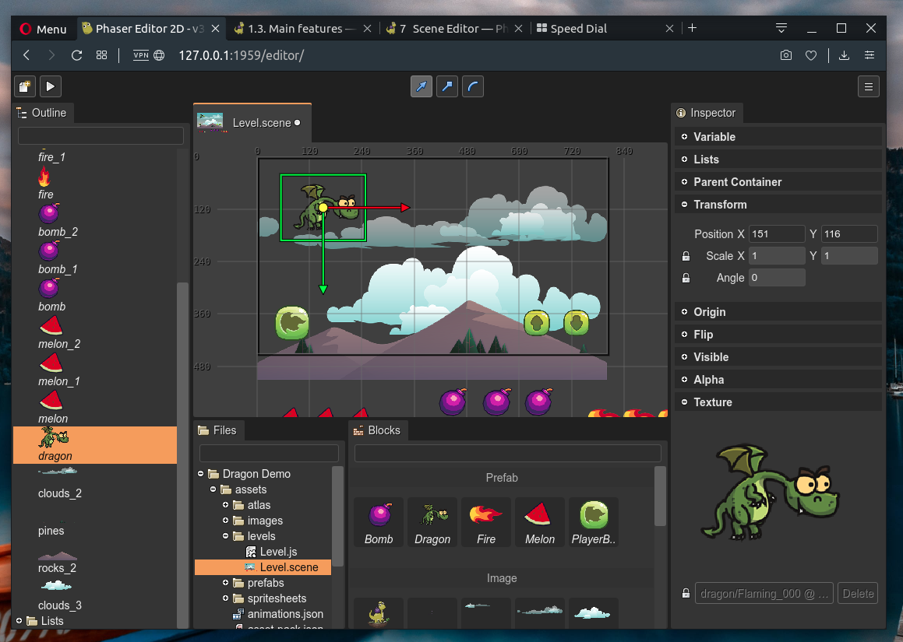

Scene Editor
The Scene Editor is the most important editor of the IDE, it provides the visual tools to create scenes (or levels).
The Scene Editor is similar to other scene maker tools. The most peculiar characteristic is that this editor compiles the scene into readable Phaser code.
Phaser provides support for certain file formats like the Asset Pack file (edited by the Asset Pack Editor), but it lacks a full-feature Scene file format suitable for level editors. Maybe it should be that way because Phaser is a framework and you may use it in very different ways and very different contexts.
How can we develop a scene editor? We know we need to save the scene in a custom format. We have two main options:
We can create a custom runtime, or plugin, to load the scene files in the game and create the objects in the fly.
We can create a scene compiler, that translates the scene data file into Phaser code.
The second option plays much better with the Phaser Editor 2D philosophy of being fully compatible with a vanilla Phaser runtime. So this compiler gets a scene data file (.scene) and generates a clean, readable, hand-writing-like Phaser code. Even this option has other advantages: it is very easy to debug the scene and knowing exactly how the objects are created and modified.
In previous desktop-based versions of Phaser Editor 2D, the Scene Editor used a custom renderer to build the scene. This render was based on desktop UI toolkits. In this version, we use Phaser and the browser to render the scene in the editor. It is a huge advantage, now what you see in the Scene Editor is what you get in the game.
This chapter covers in-depth the Scene Editor tools and concepts, if you want a quick tutorial to create a scene, read the First steps chapter.